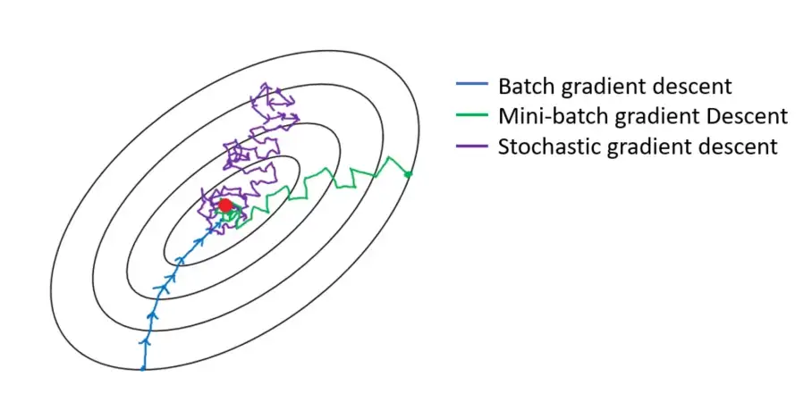

Training a Neural Network
General advice¶
General advice while training neural networks :
- Increase complexity one at a time and always provide a hypothesis on how should the model react to the said change in complexity. And verify if the hypothesis is True or False and why.
- Understand as many paterns as possible from the data using EDA and figure out which pattern is the model able to learn and why
- Before extensive experimentation get a complete pipeline executed for small data and small model. The pipeline should be from getting raw data to finalising the techincal and business reports
- Set up a full training + evaluation + testing skeleton and gain trust in the pipeline execution via a series of experiments with explicit hypotheses, losses and metrics visualizations, model predictions.
Data Decisions¶
Feature Engineering¶
- Select features and remove any that may contain patterns that won't generalize beyond the training set and cause overfitting
- Scaling your features: For faster convergence all features should have a similar scale before using them as inputs to the neural network.
Network Architechture Decisions¶
Input neurons¶
- For tabular dataset input vector is a combination of one input neuron per feature, So the shape of the input vector is the number of features selected for training
- For images dataset input vector is the dimensions of your image
- For text dataset input vector is decided by the text to vector embedding
Output neurons¶
Number of output neurons depends on the type and number of predictions - For single regression target this is a one value - For multi-variate regression, it is one neuron per predicted value, For bounding boxes we have 4 regression values one for each bounding box property : height, width, x-coordinate, y-coordinate - For binary classification we use one output neuron which represents the probability of the positive class. - For multi class classification, we have one output neuron per class, and use the softmax activation function on the output layer to ensure the final probabilities sum to 1.
Hidden Layers¶
- No of hidden layers and no of nuerons per hidden layer: Decided by hit and trial, Start with either a too big or a too small network and adjust incrementally untill the model is neither overfitting nor underfitting.
- General Recommendation : Start with 1-5 layers and 1-100 neurons (same number of neurons for all hidden layers) and slowly adding more layers and neurons until you start overfitting. Usually we get more performance boost from adding more layers than adding more neurons in each layer.
- When chossing a smaller number of layers/neurons, the network will not be able to learn the underlying patterns in your data and thus be useless. An approach to counteract this is to start with a huge number of hidden layers and neurons and then use dropout and early stopping to let the neural network size itself down for you
- For many problems in image or speech domain there are pre-trained models (YOLO, ResNet, VGG) that allow you to use large parts of their networks, and train your model on top of these networks to learn only the higher order features.
- Manytimes having a large first layer and following it up with smaller layers will lead to better performance as the first layer can learn a lot of lower-level features that can feed into a few higher order features in the subsequent layers.
Skip Connections¶
No of Parameters¶
- Calculate the number of parameters in the model and compare with the number of data points you have. (Just keep the comparision in mind).
Activation Functions¶
- Activation Functions: Comparison of Trends in Practice and Research for Deep Learning
- The performance from using different hidden layer activations improves in this order (from lowest→highest performing): logistic → tanh → ReLU → Leaky ReLU → ELU → SELU.
- ReLU is the most popular activation function , But ELU or GELU are on the rise
- To combat specific problems:
- RReLU : To combat neural network overfitting
- PReLU: For massive training sets
- leaky ReLU: Reduce latency at runtime and fast inference times
- ELU: If your network doesn't self-normalize
- SELU: For an overall robust activation function
- Regression output actiation
- softplus : For positive prediction
- scale*tanh : For predictions in range -scale and scale
- scale*sigmoid : For predictions in range 0 and scale
Weight Initialization¶
- Weights should be small (not to small) (Normalisation)
- They should have good variance
Problem of Symmetry¶
- If all weights are zero then for any given nueron is \(w^Tx\) which would be 0, and all the weigths will have same gradient updates
- If all weights are one then for any given nueron is \(w^Tx\) which would be \(x\), and all the weigths will have same gradient updates
Solution is Asymmetry¶
- With different initialisation different models lear different things about the data
- When using softmax, logistic, or tanh, use Glorot initialization Mostly default used in Tensorflow
- When using ReLU or leaky RELU, use He initialization
- When using SELU or ELU, use LeCun initialization
Vanishing and Exploding Gradients¶
- Vanishing Gradients : when the backprop algorithm propagates the error gradient from the output layer to the first layers, the gradients get smaller and smaller until they're almost negligible when they reach the first layers. This means the weights of the first layers aren't updated significantly at each step.
- Exploding Gradients : when the gradients for certain layers get progressively larger, leading to massive weight updates for some layers as opposed to the others
Question
Where in the network would you first see the vanishing gradient or exploding gradients problem? Ans: Initial layers of the network
Norms¶
- A small change in input mini batch distribution can be noticed as a very large change in deeper layers (due to chain of change formulation). This phenomenon / problem is called internal covariance shift. BatchNorm solves the issue of internal covariance shift.
- BatchNorm simply learns the optimal means and scales of each layer's inputs. It does so by zero-centering and normalizing its input vectors, then scaling and shifting them. It also acts like a weak regularizer. Batch Norm is applied after calculating \(w^Tx\) and before applying the activation
- Using BatchNorm lets us use larger learning rates (which result in faster convergence) and lead to huge improvements in most neural networks by reducing the vanishing gradients problem. The only downside is that it slightly increases training times because of the extra computations required at each layer.
- Reference
Early Stopping¶
- Early Stopping lets you live it up by training a model with more hidden layers, hidden neurons and for more epochs than you need, and just stopping training when performance stops improving consecutively for n epochs. It also saves the best performing model for you.
Dropout¶
-
Dropout gives you a massive performance boost (~2% for state-of-the-art models). All dropout does is randomly turn off a percentage of neurons at each layer, at each training step. This makes the network more robust because it can't rely on any particular set of input neurons for making predictions. The knowledge is distributed amongst the whole network.
-
In Dropout around 2^n (where n is the number of neurons in the architecture) slightly-unique neural networks are generated during the training process, and ensembled together to make predictions.
-
A good Dropout Rate is between 0.1 to 0.5; 0.3 for RNNs, and 0.5 for CNNs. Use larger rates for bigger layers. Increasing the dropout rate decreases overfitting, and decreasing the rate is helpful to combat under-fitting.
-
Read Understanding the Disharmony between Dropout and Batch Normalization by Variance Shift before using Dropout in conjunction with BatchNorm.
Gradient Clipping¶
- Gradient Clipping is a great way to reduce gradients from exploding, specially when training RNNs. Simply clip them when they exceed a certain value. Use clip_by_global_norm instead of clipnorm or clipvalue, which allows you to keep the direction of your gradient vector consistent.
-
tf.clip_by_value clips each value inside one tensor, regardless of the other values in the tensor. For instance,
Consequently, it can change the direction of the tensor, so it should be used if the values in the tensor are decorrelated one from another (which is not the case for gradient clipping), or to avoid zero / infinite values in a tensor that could lead to Nan / infinite values elsewhere (by clipping with a minimum of epsilon=1e-8 and a very big max value for instance).
-
tf.clip_by_norm rescales one tensor if necessary, so that its L2 norm does not exceed a certain threshold. It's useful typically to avoid exploding gradient on one tensor, because you keep the gradient direction. For instance:
# The original L2 norm is 7, which is >5, so the final one is 5 tf.clip_by_norm([-2, 3, 6], 5) -> [-2, 3, 6]*5/7 # The original L2 norm is 7, which is <9, so it is left unchanged tf.clip_by_norm([-2, 3, 6], 9) -> [-2, 3, 6]However,
clip_by_normworks on only one gradient, so if you use it on all your gradient tensors, you'll unbalance them (some will be rescaled, others not, and not all with the same scale). -
tf.clip_by_global_norm rescales a list of tensors so that the total norm of the vector of all their norms does not exceed a threshold. The goal is the same as
clip_by_norm(avoid exploding gradient, keep the gradient directions), but it works on all the gradients at once rather than on each one separately (that is, all of them are rescaled by the same factor if necessary, or none of them are rescaled). This is better, because the balance between the different gradients is maintained. For instance:will rescale both tensors by a factor
14.5/sqrt(49 + 196), because the first tensor has a L2 norm of 7, the second one 14, andsqrt(7^2+ 14^2)>14.5Choosing the max value is the hardest part. You should use the biggest value such that you don't have exploding gradient (whose effects can be
Nans orinfinitevalues appearing in your tensors, constant loss /accuracy after a few training steps). The value should be bigger fortf.clip_by_global_normthan for the others, since the global L2 norm will be mechanically bigger than the other ones due to the number of tensors implied.
Note
Note that tf.clip_by_value and tf.clip_by_norm work on only one tensor, while tf.clip_by_global_norm is used on a list of tensors.
Optimisation and Training Decisions¶
- Follow the advices in https://deci.ai/blog/tricks-training-neural-networks/
Optimizers¶
- Blog : SebastianRuder optimization for Deep Learning | Lecture Notes
- Adagrad's main benefits is that it eliminates the need to manually tune the learning rate
- Adaptive Moments Estimaion : Adam/Nadam are usually good starting points, and tend to be quite forgiving to a bad learning late and other non-optimal hyperparameters.
- Use Stochastic Gradient Descent if you care deeply about quality of convergence and if time is not of the essence.
- If you care about time-to-convergence and a point close to optimal convergence will suffice, experiment with Adam, Nadam, RMSProp, and Adamax optimizers
- Batch vs Mini-batch vs Stochastic Gradient Descent 
- SGD can get stuck in a Saddle point, Moment based indicators generally do better! Reference

{kind=link}
Question
- Gradients of loss with respect to weights can be 0 for 3 points : Minima, Maxima and Saddle point! How do you know where you are?
- Why do sparse features need a different learning rate from dense features? And how Adagrad, Adadelta, RMSProp helps solve this? Reference
Batch Size¶
- Large batch sizes can be great because they can harness the power of GPUs to process more training instances per time. OpenAI has found larger batch size (of tens of thousands for image-classification and language modeling, and of millions in the case of RL agents) serve well for scaling and parallelizability.
- According to this paper by Masters and Luschi, the advantage gained from increased parallelism from running large batches is offset by the increased performance generalization and smaller memory footprint achieved by smaller batches. They show that increased batch sizes reduce the acceptable range of learning rates that provide stable convergence. Their takeaway is that smaller is, in-fact, better; and that the best performance is obtained by mini-batch sizes between 2 and 32.
- If you're not operating at massive scales, start with lower batch sizes and slowly increasing the size and monitoring performance to determine the best fit.
Learning Rate And Momentum¶
- Use a constant medium learning rate until you've trained all other hyper-parameters and implement learning rate decay scheduling at the end.
- Start with a very low values (10^-6) and increase by a factor of 10 until it reaches a very high value (e.g. 10). Measure your model performance (vs the log of your learning rate) to determine which rate served you well for your problem.
- The best learning rate is usually half of the learning rate that causes the model to diverge.
- Learning Rate finder method proposed by Leslie Smith. It an excellent way to find a good learning rate for most gradient optimizers (most variants of SGD) and works with most network architectures.
- With learning rate scheduling we can start with higher rates to move faster through gradient slopes, and slow it down when we reach a gradient valley in the hyper-parameter space which requires taking smaller steps.
- Gradient Descent takes tiny, consistent steps towards the local minima and when the gradients are tiny it can take a lot of time to converge. Momentum on the other hand takes into account the previous gradients, and accelerates convergence by pushing over valleys faster and avoiding local minima.
- In general you want your momentum value to be very close to one. 0.9 is a good place to start for smaller datasets, and you want to move progressively closer to one (0.999) the larger your dataset gets.
- Setting nesterov=True lets momentum take into account the gradient of the cost function a few steps ahead of the current point, which makes it slightly more accurate and faster.

Number of epochs¶
- Start with a large number of epochs and use early stopping to halt training when performance stops improving.
Losses and Metrics¶
Checkout the insight in Losses and Metrics
References and Good Articles¶
- Andrej Karpathy's guide
- EfficientNets
- A DISCIPLINED APPROACH TO NEURAL NETWORK HYPER-PARAMETERS
- Blog
- Stochastic Weight Averaging
- On the difficulty of training Recurrent Neural Networks
- kaggle
- Stack Overflow Discussion
- Images
- Gradient Descent | Denoise gradients using Exponential smoothing : Stochastic Gradient Descent with momentum
Transfer Learning¶
- If new data is very similar to previous data then : Don't fine tune anything : Use the pre trained model weights as feature engineering tool
- If new data is medium size and similar to previous data then : Fine tune the the a few last layers of the model with small learning
- If new data is large size and similar/dis-similar to previous data then : Fine tune the the complete model equivalently use the pre trained model weights as initialisation for the new model
- Transfer Learning
ConvNets¶
- Padding : Zero Padding (popular) Vs Same value padding (Not used very much)
- Output dimension formula for Input Image of size \(N \times N\), with padding \(P\) and stride \(S\) is \(floor(\frac{N-2+2P}{S}) + 1\)
- Depth-wise Convolution and Depth-wise Separable Convolution
- Data Augmentation : Improve types and quantity of Invariance (shift, rotation, zoom, shear, noise)
- Max Pooling Subsampaling is used to solve these problems
- Location Invariance
- Scale Invariance
- Rotation Invariance
Should the kerenel width and number of kernels increase or decrease as depth increases in CNNs ?
- In general keep the feature space wide (smaller size of filters
mxn) and shallow (low number of filters) in the initial stages of the network, and then make it narrower (bigger size of filtersmxn) and deeper (high number of filters) towards the end. - We want initial layers to learn simple features like edge detectors etc. There are a limited number of such features. Hence the low number of filters in the beginning.
- Each of the filters in the previous layers can be combined in exponential number of ways to detect complex patterns. For example, if previous layer has 4 filters, then next layer can learn to combine them in 2^n = 16 different ways.
- Not all of those ways will be exhaustively needed, so a rough rule of thumb is to double the number of filters as you increase layers because the number of complex patterns will be exponentially more than number of simple patterns to learn.
Refernces and Questions¶
- In CNNs, how we can be sure that all kernals are not learning same thing? (Ans: Random Initialisation)
- large_kernel
- Cnn ppt
- DL-Tutorial-NIPS2015
- cs231n Stanford CNN course
- ConvolutionalNeuralNetwork
- LeNet
- AlexNet paper, AlexNet image
- ResNet : x -> Conv -> Relu -> Conv -> x1 || ←+ x || -> Relu
- InceptionNet : Multple kernel output concatenations using 1x1 convolution hack
- LSTMs | LSTMs No of Parameters | GRU_1 | GRU_2
- Why is padding done in LSTMs ? (To run the Optimisation on a batch and not on single example)
{kind=link}